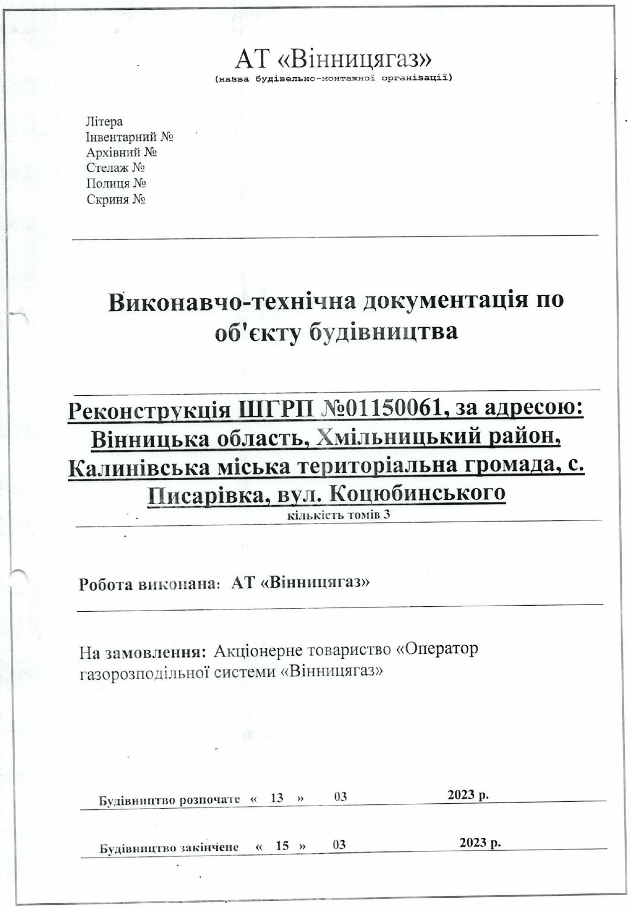

Виконавчо-технічна документація
Оберіть розділ документації:
- Акт приймання в експлуатацію об’єктів систем газопостачання (ПРГ)
- Акт приймання в експлуатацію об’єктів систем газопостачання (газопровід с/т)
- Акт приймання в експлуатацію об’єктів систем газопостачання (газопровід н/т)
-
Виконавчо-технічна документація, частина 1

- Виконавчо-технічна документація, частина 2
- Паспорт ШГРП
- Принципова схема ШГРП